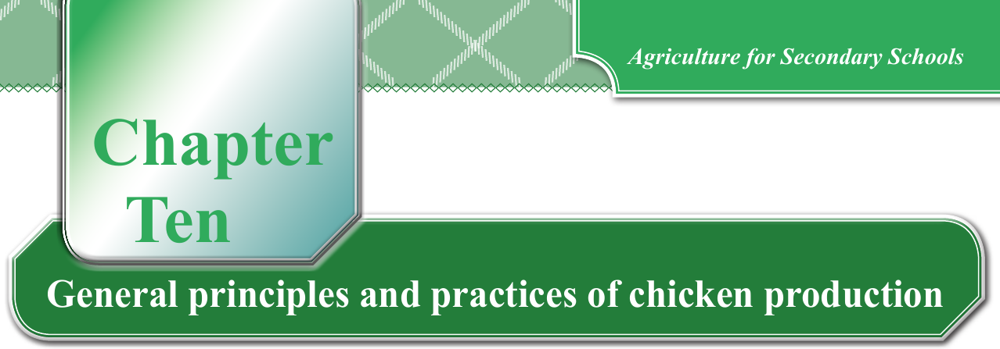

Chapter Ten. General principles and practices of chicken production
Chicken types
Different types of chickens have different characteristics, such as body size, growth rate, egg-laying ability, and resistance to diseases. You need to know the characteristics of different chicken breeds to choose the most suitable breed for your farming goals and conditions. Some chicken breeds are better suited for meat production, while others are known for their high egg production. Understanding the types and breeds of chickens helps you to make informed decisions about breed selection, feeding requirements, and overall management practices. It will also allow you to plan and implement appropriate housing and management systems based on the specific needs of the chicken breed you are working with.
Kinds of chickens can be grouped according to type. Type of chicken is a term which describes the general shape and form as suited to a function of the bird. There are four basic types of chickens which are egg-type, meat-type, dual-purpose chickens, that is, for both meat and eggs and ornamental chickens.
Egg-type chickens: This group involves chickens specifically developed for egg production. They are usually light in weight compared to meat-type chickens. They do not easily go broody, that is, they do not want to sit on their eggs to hatch them. The egg-type chickens are called layers or eggers.
Meat-type chickens: This group specifies chickens developed for meat production. They are heavier than egg-type chickens. They do not tolerate the high ambient temperatures of the tropics as the egg-type chickens. They only lay a few eggs.